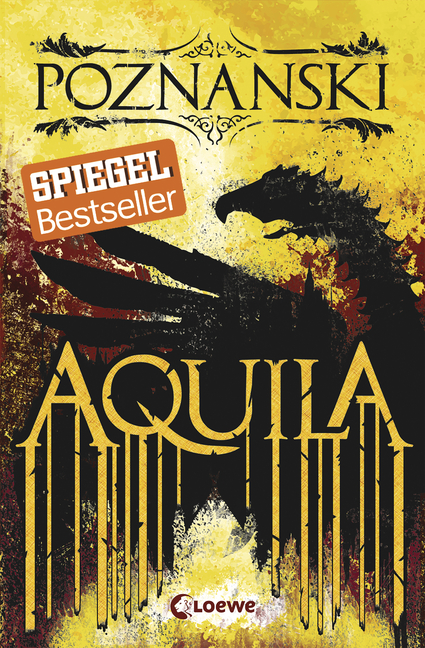
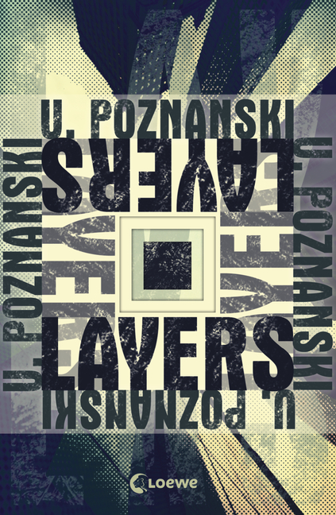
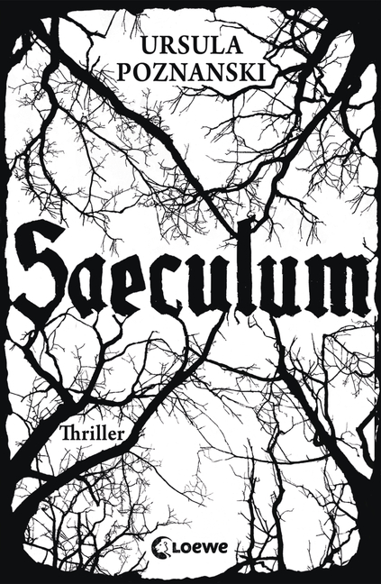
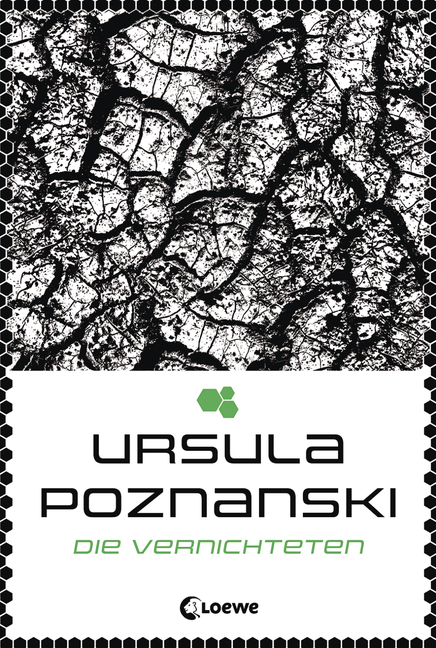

"Ursula Poznanski, geboren in Wien, studierte sich einmal quer durch das Angebot der ortigen Universität, bevor sie nach zehn Jahren die Hoffnung auf einen Abschluss begrub und sich als Medizinjournalistin dem Ernst des Lebens stellte. Nach der Geburt ihres Sohnes begann sie, Kinderbücher zu schreiben. Ihr Jugendebuchdebüt "Erebos" erhielt zahlreiche Auszeichnungen (u.a. den Deutschen Jugendliteraturpreis) und machte die Autorin interna- tional bekannt. Inzwischen ist sie eine der erfoglreichsten Jugendbuch- autorinnen Deutschlands und schreibt zudem Thriller-Bestseller für Er- wachsene. Sie lebt mit ihrer Familie im Süden von Wien."

Aquila

Layers

Saeculum
Die
Verraten-
en
Die
Ver
schwo-
renen

Die
Vernich-
teten
Erebos